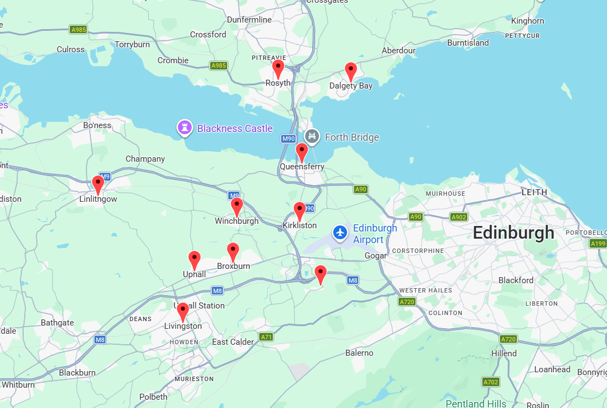

Why Choose Us?
Your Cats Stay Happy At Home
Cats can find it stressful being in catteries and away from home. Research shows that cats are most comfortable and feel safest in their own environments. We help you keep them feeling happy and safe while you are away - so you can relax knowing they are taken care of.
Feline First Aid & CPR certified
I am fully trained and certified in Feline First Air and CPR. Your cats wellbeing and safety is my absolute priority.
Fully Insured & Key Safe
We are fully insured for your peace of mind. We keep your house keys fully secure and unidentifiable.
Home Peace of Mind
It can be a worry leaving your home so we help keep it looking lived in by picking up mail/parcels, opening/closing curtains and blinds , watering plants and putting out wheelie bins.
Picture Updates
We send updates and clear photos after every visit for your peace of mind. (Unless you prefer less contact). So you can relax in the knowledge they are cared for and happy.
Meet & Greet
When you book for the first time I will come to meet you and your cat(s) at your home to get to know everything about you and your pets so I can give them the best care while you're away.
Extra Needs
Many cats get anxious when their owners are away - we always move at their pace to ensure their comfort. We can also cater for special diet needs and extra grooming as required.
Areas We Cover
West Lothian
Winchburgh, Broxburn, Uphall, Uphall Station, Linlithgow, Livingston, Bathgate, Pumpherston, Kirknewton, East Calder, Mid Calder and surrounding villages.
Edinburgh West
South Queensferry, Kirkliston, Ratho, Newton, Dalmeny, Newbridge, Turnhouse, Gogar and nearby areas.
Fife
Dunfermline, North Queensferry, Dalgety Bay and Rosyth.
